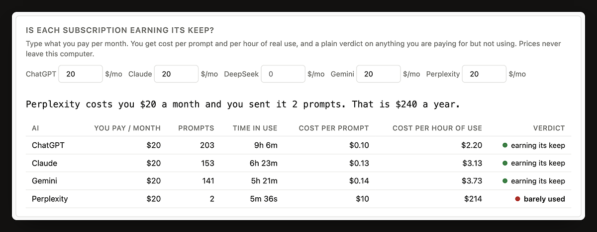

Most people who pay for several AIs lean on one or two. Pro shows what each one costs you per prompt and per hour of real use. Cancel one unused 20 dollar subscription and Pro has paid for itself three times over in the first month.
The easy way to find out whether the numbers are useful to you.
Get Pro monthlyWhat most people should pick. History is the part of Pro that gets more useful the longer it runs.
Get Pro yearlyPay once and keep Pro, including every later version. There is no server to keep running, so this costs me nothing to honour.
Get Pro for lifeEvery install starts with 14 days of Pro and no card. Prices are in US dollars. Checkout, tax and invoices are handled by Polar, who are the merchant of record, so your card statement will show Polar. Not happy in the first 14 days? You get your money back.
Using WhileAI is free and stays free. Pro is the analysis on top.
| Free | Pro | |
|---|---|---|
| Prompts you can sendNo daily or monthly cap on either plan. | Unlimited | Unlimited |
| AIs one prompt reaches at onceBesides the one you typed in, so the free plan gets you three answers to one question. You choose which. | 2 | Every one you switch on |
| Queue you can see, a switch per AI, sign-out and limit warnings | Yes | Yes |
| "Answers ready" list, the count on the toolbar icon and the chimeOne line per answer that landed while you were looking elsewhere. Click it and you are in that conversation. | Yes | Yes |
| Dashboard: writing, waiting and reading time, totals per AI | Last 7 days | Full history |
| Weekly and monthly summary cards to share | Yes | Yes |
| JSON export, import and deleteAnd you decide how long records are kept, on either plan. | Yes | Yes |
| Is each subscription earning its keep?Cost per prompt and per hour of use for every AI you pay for, and which ones are going unused. The free plan tells you how many look underused, not which. | One line | Yes |
| Head to headFirst words, typical answer time, the slowest one in ten, how often each AI was fastest on the prompts you sent to several, and how often you switched away. | No | Yes |
| Did the first answer do the job?Average messages per conversation, per AI. Close to one means the first answer was usually enough. Counted from how many times you replied, never from what was said. | No | Yes |
| Do slow answers make you switch tabs?Your own patience, measured: how often you left the tab during waits of each length. | No | Yes |
| How fast answers usually are, and your ten longest waitsThe spread of your answer times, with long research jobs counted apart. | No | Yes |
| When you use AI: the hour-by-weekday heatmapOver the 30 and 90 day windows, which the free plan's 7 days cannot show. | No | Yes |
| What you did while you waitedHow much of your waiting you spent elsewhere instead of watching the answer arrive. | No | Yes |
| Weekly report and your own notification rulesOne notification a week with your AI time and most used AI. Rules: a minimum wait before you are told, and a chime for some AIs and not others. | No | Yes |
| CSV export | No | Yes |
Nothing is deleted to enforce the free plan. Your history keeps recording on your computer the whole time, and the day you upgrade you see all of it.

There is no account to create and nothing to sign in to.
The extension checks the key with Polar when you enter it and about once a week afterwards, so it can notice a cancellation. Only the key is sent. If that check cannot be made because you are offline, Pro keeps working.
Yes, on both plans. Every AI tab is timed separately and at the same moment, including background tabs. "Time spent waiting" adds the waits together; the "on the clock" line under it merges the ones that overlapped, so four AIs answering at once for 10 seconds is 40 seconds of waiting and 10 on the clock. Pro's head-to-head table is built from exactly those side-by-side timings.
It will not judge a subscription on less than 14 days of use. Until then it shows what each prompt has cost so far. The trial is 14 days for the same reason: by the end of it the first verdicts are in.
You are on the free plan, without doing anything. Prompts go to two AIs at a time and the dashboard shows the last 7 days. No card was taken, so nothing is charged.
No. Your data lives in your browser, not with me. Cancelling puts you back on the free plan at the end of the period you paid for, and everything recorded stays where it is.
Yes. A key is for one person, on the browsers that person uses.
Yes, every version of the WhileAI extension. If I ever build a separate product, that would be separate.
No. There is no server that could. Prompts, timings and the prices you enter are stored in your browser only. The privacy page lists every network request the extension makes.
From the customer portal linked in your Polar receipt, or by writing to me. Pro stays on until the end of the period you paid for, then the extension goes back to the free plan. Nothing is deleted.
Yes. Buy the new plan, paste the new key over the old one, and cancel the monthly one. If the two overlap by more than a few days, write to me and I will refund the overlap.
It is in the email Polar sent when you paid, and in Polar's customer portal, which that email links to. If you cannot find either, write to me from the address you paid with.
WhileAI is made by Ahmet Aytar. Payments are taken by Polar Software Inc. as merchant of record, which means Polar is the seller on your receipt and handles tax. It is not sold by Google. The terms of sale say this in full.